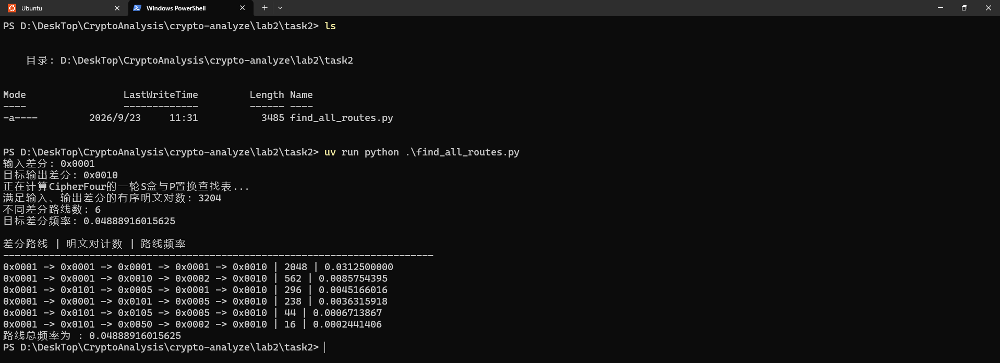
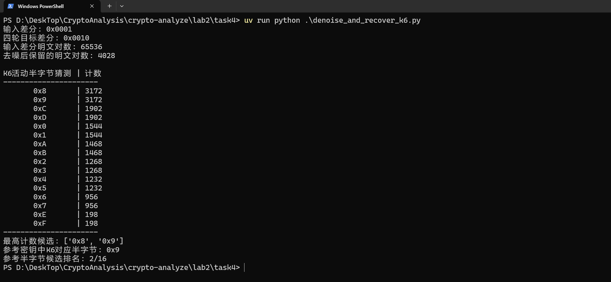

实验二：差分路径与密钥恢复¶
来源：
密码分析学 / review/实验复习/02-差分路径与密钥恢复.md
实验二把差分攻击串成了一条完整流程：计算 DDT → 搜索路线与差分 → 验证固定密钥频率 → 筛选密文对 → 猜测末轮子密钥并计数。最值得掌握的是每一步计算的对象，以及实验计数如何支持理论结论。
1. 从一个 S 盒开始：DDT 统计的是什么¶
实验使用 4 比特 S 盒，按输入 0,…,F 排列的输出为：
固定输入差分 \(a\)，遍历 \(x\in\{0,\ldots,15\}\)，统计
因此
以 \(a=1\) 为例，非零表项只有三个：
| 输出差分 \(b\) | DDT 计数 | 概率 |
|---|---|---|
1 |
8 | \(1/2\) |
2 |
4 | \(1/4\) |
5 |
4 | \(1/4\) |
例如 \(x=0\) 时，\(S(0)\oplus S(1)=9\oplus8=1\)。\(x=1\) 又统计同一无序输入对的另一种顺序；DDT 的分母是全部 16 个 \(x\)，所以计数和分母的口径一致。
三个快速检查：每行计数之和为 16；\(\operatorname{DDT}[0,0]=16\)；非零输入差分的计数均为偶数，因为 \(x\) 与 \(x\oplus a\) 成对出现。
对应代码：DDT.py。
2. 最佳路线与最佳差分：程序到底取 max 还是求和¶
一个 16 比特差分包含四个半字节。四个 S 盒输出差分确定以后，先乘四个局部传播概率，再通过 P 置换得到下一轮差分。P 置换只搬动差分比特，不额外引入概率。
设一轮差分转移概率为 \(R(u,v)\)。两种搜索的核心区别是：
| 搜索目标 | 更新式 | 最终结果 |
|---|---|---|
| 最佳单条路线 | \(B_{r+1}(v)=\max_u B_r(u)R(u,v)\) | 一条具体中间差分序列 |
| 固定输入的差分分布 | \(D_{r+1}(v)=\sum_u D_r(u)R(u,v)\) | 所有到达 \(v\) 的路线概率之和 |
DDT 乘积模型对应独立均匀轮密钥下的平均差分传播概率。固定具体密钥时，实际频率由明文遍历得到。
2.1 一条路线的概率：沿途相乘¶
实验中的四轮路线
每轮概率均为 \(1/2\)，所以单条路线概率为
而路线
四轮概率为 \(1/2,1/4,1/2,3/8\)，乘积是 \(3/128\)，不是 \(2^{-5}\)。原实验截图中整数化的对数显示会丢掉这个差别，计算题应保留真实乘积。
2.2 同一头尾差分：把路线贡献加起来¶
任务一选择的新四轮差分为
DDT 动态规划给出
任务二则遍历无轮密钥异或的四轮 SP 网络，即零轮密钥实例。它找到了 6 条实际出现的路线，共有 3204 个有序明文对命中，得到
其中最多的一条是
计数为 2048，频率为 \(2048/65536=1/32\)。把六条路线的计数相加才得到 3204。

图源：实验二任务二运行结果；这里的“路线频率”来自具体网络的明文遍历。
对应代码：最佳单条路线 · 差分概率求和 · 实际路线枚举。
3. 密钥异或抵消，为什么不同密钥的频率还不同¶
一对状态使用相同密钥时，确实有
进入 S 盒的具体值变成了 \(x\oplus k\) 与 \(x'\oplus k\)。密钥改变了具体输入值，也就影响了各轮传播条件的衔接和整条路线的实际频率。
任务三固定种子 20261001，生成五组轮密钥，每组都遍历全部 \(2^{16}\) 个明文。目标仍是 0001 → 0010：
| 密钥组 | 命中有序对数 | 差分频率 |
|---|---|---|
| 1 | 3144 | 0.0479736328 |
| 2 | 3124 | 0.0476684570 |
| 3 | 3120 | 0.0476074219 |
| 4 | 3196 | 0.0487670898 |
| 5 | 3018 | 0.0460510254 |
| 平均 | 3120.4 | 0.0476135254 |
这五组结果接近 DDT 模型的 \(0.0479736328125\)。每组已穷举全部明文，组间差异来自固定密钥下的真实传播差异。
对 16 比特随机置换，指定非零输出差分的平均概率为 \(1/(2^{16}-1)\)。约 \(4.8\%\) 的目标差分显著高于这一基准，因此它可以作为四轮区分器。
对应代码：五组密钥的全码本统计。
4. 从四轮区分器到五轮密钥恢复¶
4.1 先看最后一轮长什么样¶
统一将六个轮密钥记为 \(K_0,\ldots,K_5\)。前四轮都有 S 盒与 P 置换，第五轮没有 P 置换。记前四轮输出为 \(U_4\)，则
实验程序 denoise_and_recover_k6.py 按 \(K_1,\ldots,K_6\) 编号；它的 K6 就是这里的末次白化密钥 \(K_5\)。
选择明文对 \(P'=P\oplus\texttt{0001}\)。四轮目标差分 0010 只有从左往右第 3 个半字节活跃，因此只猜这个位置的 4 比特白化密钥：
其余三个位置的输入差分为零。对相同密文半字节，两次逆运算的差也恒为零，无法通过这个差分区分其密钥值。
4.2 去噪：在猜密钥之前筛掉明显错误的对¶
活跃 S 盒的输入差分是 1，查 DDT 得到输出差分只能是 1、2、5。于是正确对的最终密文差分必须满足
其他密文对直接丢弃。通过筛选的对中仍有错误对，因为这些末轮输出差分也可以来自其他 S 盒输入差分。
实际码本包含 65536 个不同明文，配成 65536 个有序对；筛选后保留 4028 个有序对。去噪的作用是提高有效对比例，并减少后续的候选检验次数。
4.3 猜密钥：两边都先异或猜测，再过逆 S 盒¶
提取活跃密文半字节
对每个 \(h\in\{0,\ldots,15\}\) 检查
成立就令候选 \(h\) 的计数器加一。\(K_4\) 在两边异或时抵消，因此不用猜它。

图源：实验二任务四运行结果；图中采用从 1 开始的轮密钥编号。
4.4 为什么 8 和 9 同分，而且增加同类数据也分不开¶
实测最高分为 3172，对应候选 \(\{\texttt{8},\texttt{9}\}\)。给定末次密钥为 BA98，目标半字节是 9。
原因是这个 S 盒满足如下判别对称性：
因此对任意密文对，\(h\) 与 \(h\oplus1\) 的命中结果完全相同，所有候选都两两同分。当前差分方程将候选分成 8 类，每类两个值。
本实验把 16 个候选缩小为 2 个，获得了 3 比特的区分信息。 要分开最后两个值，需要换用能够打破该对称性的差分条件，或结合其他密钥信息验证完整加密。
对应代码：配对、去噪与半字节计数。
5. 实验复杂度怎样算才不重复¶
设码本大小为 \(N\)，筛后有序对数为 \(M\)：
| 阶段 | 本实验的量 | 计算单位 |
|---|---|---|
| 获取码本 | \(N=65536\) | 不同明文的密文 |
| 配对与筛选 | 65536 | 有序明文对 |
| 候选评分 | \(16M=16\times4028=64448\) | 半字节差分判别 |
| 逆 S 盒查询 | \(2\times64448=128896\) | 4 比特查表 |
攻击处理时间为 \(O(N+16M)\)，保存码本与筛选结果的空间为 \(O(N)\)。这里的 64448 次候选检验均为局部半字节运算。
本实验已拥有完整的 \(2^{16}\) 个明文码本。\(P\) 与 \(P\oplus1\) 都在其中，反向配对不会产生新明文。因此：
- 不同明文数是 \(2^{16}\)，不是 \(2^{17}\)。
- 有序对数是 \(2^{16}\)，不同无序对数是 \(2^{15}\)。
- 按无序对去重后，命中数、候选得分与评分时间均减半，频率和排序保持不变。
报告勘误： 旧版任务四重复计算了双向配对的明文数，逆 S 盒方程第一项漏写 \(\oplus h\)。本节给出了与代码一致的公式和计数。
6. PHILOX 对照实验：从轮函数直接推出概率 1 差分¶
任务五实现的实验轮函数为
其中 \(W=8\)、\(M=\texttt{9B}\)、\(K=\texttt{46}\)。实验二与实验三的代码对乘积高、低字的安排不同，使用了不同轮函数；本节按实验二给定的公式推导。
若输入差分为 \((\Delta L,0)\)，两边的 \(R\) 相同，乘积高、低字也相同，立即得到
一般情况下，输出差分为
\(L\) 与 \(K\) 的具体值均被消去。因此固定输入差分后，只遍历 \(2^8\) 个 \(R\) 就能获得完整差分分布；原程序遍历全部 \(2^{16}\) 个 \((L,R)\)，每种 \(R\) 的贡献重复 \(2^8\) 次，所得概率相同。
实验将其与固定种子 20261009 生成的 16 比特随机置换进行对照：
| 输入差分 | 实验轮函数的不同输出差分数 | 最高概率 | 随机置换的不同输出差分数 | 最高频率 |
|---|---|---|---|---|
(00,01) |
59 | \(1/16\) | 25796 | \(12/65536\) |
(01,00) |
1 | \(1\) | 25824 | \(12/65536\) |
(00,02) |
68 | \(1/16\) | 25725 | \(12/65536\) |
(02,01) |
59 | \(1/16\) | 25789 | \(12/65536\) |
可以从目标差分概率和分布支持数两方面观察结构：实验轮函数的输出差分集中，随机置换的输出差分分散。随机置换的 \(1/65535\) 是指定非零差分的平均概率，表中列出的是各项频率的最大值。
7. 考前能独立回答这五问就掌握了主线¶
- DDT 的 8 表示什么？ 16 个输入值中有 8 个产生目标输出差分，概率为 \(8/16\)。
- 路线搜索中的 max 换成求和意味着什么？ 从寻找最佳单条路线，变为累计同一头尾之间的全部路线贡献。
- 为什么先去噪再猜密钥？ 密文差分的必要条件不依赖猜测，能先删除大量无用对，降低评分开销。
- 高分为什么不等于唯一密钥？ 此 S 盒的判别具有 \(h\) 与 \(h\oplus1\) 的严格对称性。
- 完整码本中的 65536 个有序对用了多少不同明文？ 65536 个；交换配对顺序只重复计数。
复现与材料¶
以下命令在仓库根目录运行，使用 Python 3 标准库，依次查看路线、固定密钥频率和候选排名：